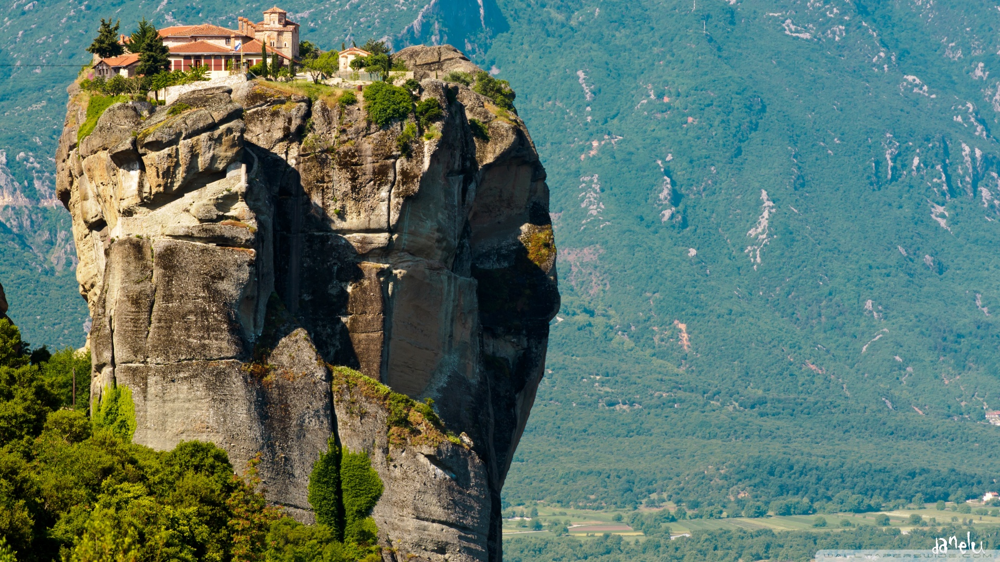

Iceland
Iceland Norway
Norway Peru
Peru Greece
Greece Australia
Australia South Africa
South AfricaWelcome to Greece
Greece is one of the most popular tourist destinations in the world it consists of over sixty inhabited islands, historic
sites that are millenias old, idylic beaches and hill-top mountains. The popular places in Greece include:
Athens Crete Imerovigli Santorini Skiathos Meteora
Athens

The city of Athens, is the capital city of Greece. It is also the heart of Ancient Greece. The city is full of 5th-century BC landmarks as well as sculptures, vases and jewelery truly such novelties will let your mind drift. The Acropolis Museum, along with the National Archaeological Museum, preserves vases and jewelry from Ancient Greece.
Crete

Crete is the largest Greek island of Greece. One of the most popular destinations of the country. Crete Greece keeps intact its unique character. Its history has left marks on the: greek islands, Minoan palaces, Venetian towns, Medieval Castles, Ottoman mosques and Byzantine monasteries. If none of these interest you their is also the beach to keep you occupied and away.
Imerovigli

North of Santorini is Imerovigli a picturesque village only 2 km away from the capital of Fira. It is a continuation of Fira and it boasts one of the most beautiful balconies of the island. The name of Imerovigli comes from the root word vigla which meaning view spot. Immerovigli consists of many chapels and churches built on the rocks overlooking the blue sea. This village is the ultimate romantic destination to truly escape as a couple.
Santorini

If places were models this supermodel is truly a beauty to look at. Tourists are bedazzled due to its multicoloured cliffs which soar out of a sea-drowned caldera and topped by drifts of white washed buildings will definitely leave its travellers be bewitched.
Skiathos

For party animals Skiathos is one of the best destinations in Greece it consists of golden beaches, green nature and vivid atmosphere. Its beaches is located on the southern part of the shore. However their is also aanother beach which is only available through a boat trip which also boasts of a Medieval Castle.
Meteora
Meteora is a greekword which means middle of the sky or suspended in the air the early people of the area had a great desire to achieve complete isolation annd detach yourself from all your worries and sorrows.